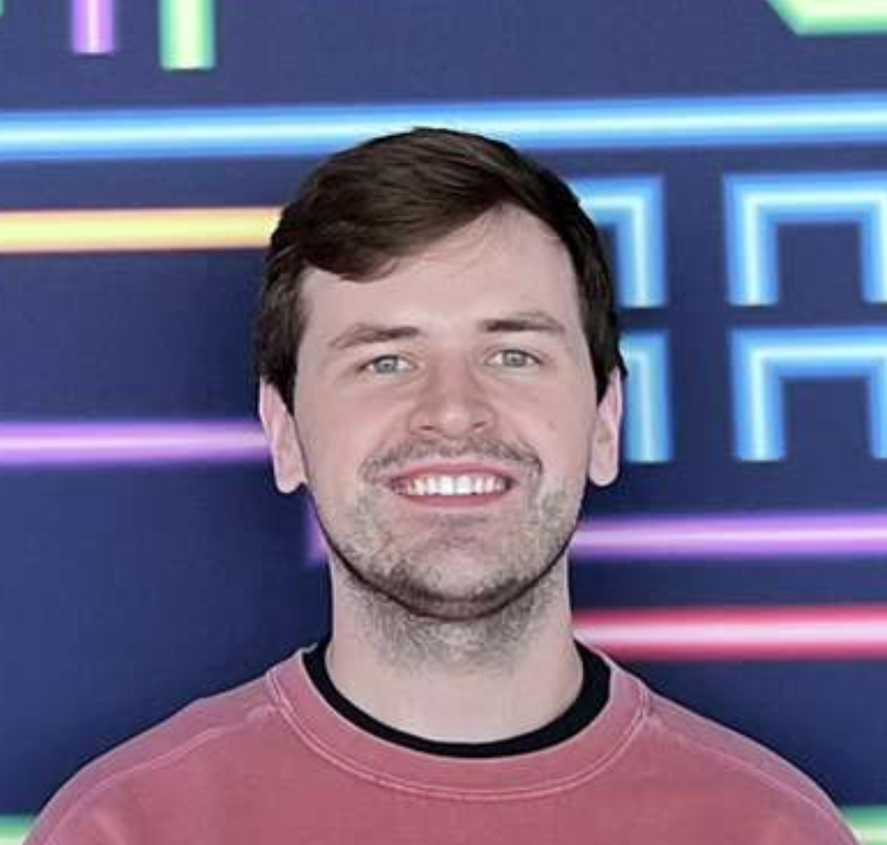

About Ryan
I am a Ph.D. candidate at Texas A&M University specializing in computational fluid dynamics (CFD) and hydrodynamic instabilities. My research focuses on the formation and breakup of reactive metal ejecta, incorporating material modeling, computational analysis, fluid mechanics, and reaction product dynamics. I am currently focused on hydrodynamic instability analysis and theory as they relate to the formation of reactive ejecta. Please reach out if you would like to discuss my work further or request a copy of my full curriculum vitae.
Research Interests
- / Computational Fluid Dynamics (CFD)
- / Rayleigh-Taylor and Richtmyer-Meshkov Instabilities
- / Reacting Multiphase Flows
- / Fracture & Breakup Modeling
- / Arbitrary Lagrangian-Eulerian (ALE) Hydrocodes
- / Material-Fluid-Solid Interactions
- / Numerical Methods & Parallel Computing
- / Oxidation & Hydriding Reactions
- / Actinide & Lanthanide Material Science
- / Shocked Material Analysis
- / Lagrangian Point-Particle Implementation
- / High-Performance Computing (HPC)
Physics Web Applications
You might notice I have some apps here that show relatively simple phenomena in fluid mechanics. I personally find it helpful to have a qualitative example to visualize the effects of, say, an equation. Being a visual learner, I've found it a bit rough in more abstract classes where equations usually come first and examples are often an afterthought. I would love to keep making these as pedagogical tools in the future.
Education
Texas A&M University
Expected Dec 2026J. Mike Walker '66 Department of Mechanical Engineering
Ph.D. Candidate in Mechanical Engineering
Dissertation: "Reactive Metal Ejecta Formation and Breakup"
Committee:
Drs. Jacob McFarland (chair), Iman Borazjani, Matt Pharr, and Lin Shao
University of Oklahoma
May 2021Gallogly College of Engineering
B.S. in Mechanical Engineering
Awarded with Special Distinction
Experience
Texas A&M University
Graduate Research Assistant | Fluids Mixing at Extreme Conditions Lab
Advisor: Dr. Jacob McFarland
Los Alamos National Laboratory
Student Researcher | XCP-4 Continuum Models and Numerical Methods
Advisors: Dr. Jonathan Regele, Dr. Frederick Ouellet
University of Oklahoma
Undergraduate Research Assistant | Biomechanics and Biomaterials Design Lab
Advisor: Dr. Chung-Hao Lee
University of Oklahoma
Undergraduate Research Assistant | Biomedical Engineering Lab
Advisor: Dr. Chenkai Dai
Publications & Presentations
Peer-Reviewed Journal Publications
- 1. Myers, R. J., Ouellet, F., Regele, J. D., and McFarland, J. A., "A stress-based fracture model for reacting metal ejecta," Journal of Applied Physics, Volume 139, Issue 17, 2026, 174903. DOI
- 2. Zargarnezhad, H., Myers, R. J., and McFarland, J. A., "Particle size effects in multiphase Rayleigh–Taylor instability," Physics of Fluids, Volume 37, Issue 4, 2025, 043302. DOI
- 3. Zargarnezhad, H., Myers, R. J., Speck, A. K., and McFarland, J. A., "Radiation driven-dust hydrodynamics in late-phase AGB stars," Astronomy and Computing, Volume 45, 2023, 100766. DOI
Selected Presentations
- Myers, R. J. et al., "Secondary Breakup of Reactive Metal Ejecta Particles," presented at the JCRNS Workshop, College Station, TX, Dec 2025.
- Myers, R. J. et al., "Stress Analysis of a Reacting Hydride Ejecta Particle," presented at the JCRNS Workshop, College Station, TX, Dec 2024.
- Myers, R. J. et al., "Early Simulations of a Reacting Metal Ejecta Particle in Still Gas," presented at the APS DFD Meeting, Salt Lake City, UT, Nov 2024.
- Myers, R. J. et al., "Creating Physics Mechanisms for Simulating Reactive Metal Ejecta for Use in Particle Models," poster presented at the Texas A&M National Labs Office Reception, Mar 2024.
- Myers, R. J. et al., "Analysis of a Reaction Mechanism for Use in Ejecta Particle Simulations," presented at the APS Shock Compression of Condensed Matter, Chicago, IL, June 2023.
- Myers, R. J. et al., "Implementation of Diffusion and Reaction Mechanisms for Reactive Ejecta Simulations," poster presented at the APS DFD Meeting, Indianapolis, IN, November 2022.
Research Projects
Multi-Layered Richtmyer-Meshkov Instabilities
Investigating a historically overlooked variable, this research examines how surface finish dictates the formation and subsequent dynamics of reactive metal ejecta. By focusing on the initiation and growth rates of the Richtmyer-Meshkov instability, the work identifies how initial surface morphology influences secondary particle production. This effort implements simulations across a broad range of scenarios to establish a robust framework capable of predicting these effects in practical applications. Ultimately, this framework establishes a definitive connection between initial surface conditions and the macroscopic production of reactive metal particles in extreme environments.
Stress-Based Fracture Models for Reactive Ejecta
A major predictive advancement in the field, this work implements a theoretical stress evolution model capable of analyzing millions of particles in large-scale ejecta simulations. By accounting for the size and temperature dependent dynamics of the hydride shell, which were often overlooked in prior research, the model enables a more physically grounded representation of reactive ejecta. The framework performs fracture analysis for Lagrangian point particles within an Arbitrary Lagrangian-Eulerian hydrocode where experimental conditions are replicated for validation. Replicating these conditions bolsters the model's reliability for predicting fracture behavior across vast populations of reactive particles.
Resolved Hydriding Particle Simulations
Utilizing mesh-resolved simulations, this research examines the interaction between chemical reactions and physical breakup in reactive metal ejecta. In experimental settings, these particles evolve violently with the formation of a solid hydride shell. Because the minute scale of the particles makes direct measurement of fracture and breakup difficult, computational simulations are employed to characterize their evolution. The work centers on extensive code development and implementation within an Arbitrary Lagrangian-Eulerian hydrocode to bridge these complex physical processes. By integrating material modeling and reaction product dynamics, the effort attempts to clarify how product shell growth directly influences the mechanical integrity and fragmentation of individual particles.
Personal Interests
Hobbies and Pastimes
Hobbies
Cooking, Homelabbing, Collecting Sneakers, Game Emulation, Single Board Computing, Computer Hardware Tinkering, and everything else listed here
Sports Teams
Oklahoma Sooners (BOOMER!), Moore Lions, Texas A&M Aggies, OKC Thunder, San Francisco Giants, San Francisco 49ers, San Jose Sharks
Books
Slaughterhouse-Five, The Sirens of Titan, The Lord of the Rings, A Song of Ice and Fire, For Whom the Bell Tolls, Catch-22, Gravity's Rainbow, Currently reading: White Noise by Don DeLillo
Movies and Shows
Memories of Murder, The Good, The Bad, and The Ugly, Anatomy of a Murder, It's a Wonderful Life, High and Low, Moneyball, The Nice Guys, The Shawshank Redemption, The Leftovers, Seinfeld, The Wire, Mr. Robot, Slow Horses
Games
Sekiro: Shadows Die Twice, The Assassin's Creed Series, The Persona/SMT Series, NBA 2K, Mount & Blade, Ratchet & Clank, Balatro, Star Wars Battlefront, Red Dead Redemption, Halo, MMOs in general
Music
Led Zeppelin, Steely Dan, Miles Davis, Herbie Hancock, UGK, Outkast, Turnstile, Freddie Gibbs, Nirvana, Kendrick Lamar, Tom Petty & the Heartbreakers, Green Day, Pixies, Weezer, The Clash, Wavves, Vince Staples